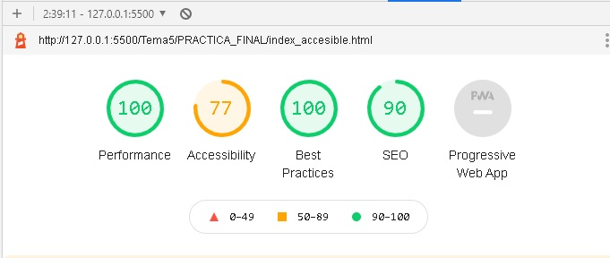

El unico uso que tuene este formulario, es poner en practica las etiquetas de WAI-ARIA y sus roles
En este formularios se utilizan varios roles y etiquedas WAI-ARIA
En las etiquetas label pongo eltraibuto for con el valor
del id del
input al que referencio
aria-required=true: para que el lector de pantalla me diga
que es
obligatorio
aria-placeholder="": con esto me dira lo que le he puesto
en el atributo
de placeholder
role="textbox": Con este role, me dita que tipo de entrada
es
role="option": otro tipo de role, donde le indico que tipo
de elemento
estamos
role="checkbox": Le estamos indicando que es una casilla de
verificacion
role="button": El tipo de entrada es de tipo button
role="tree": Dentro de esta lista se usa ese role, para el
elmento que
contiene los elementos de esta lista
role="treeitem": Se coloca en cada elementos de esta lista
Accesibilidad
Este juego de documentos es una versión basada en texto de parte del contenido cubierto en el Curso
de Udacity sobre Accesibilidad. En lugar de ser una transcripción directa del curso den video, sirve
como un tratamientos más conciso de los principios y prácticas de accesibilidad, usando el contenido
original del curso como base.
Comprender la accesibilidad, su alcance y su impacto pueden hacer de ti un mejor programador web. La
intención de esta guía es ayudarte a comprender cómo puedes hacer que tus sitios web sean accesibles
y fáciles de usar para todos.
¿Qué es la accesibilidad?
A grandes rasgos, cuando decimos que un sitio es accesible, queremos decir que el contenido del sitio
está disponible y, literalmente, cualquiera puede manejar su funcionalidad. Como programadores, es
sencillo asumir que todos los usuarios pueden ver y usar un teclado, mouse o pantalla táctil, y
pueden interactuar con el contenido de tu página de la misma forma que tú.
En formularios
Este formulario tiene varios problemas de accesibilidad.
El texto tiene poco contraste, lo cual dificulta la lectura para usuarios con
baja visión.
Tener etiquetas a la izquierda y campos a la derecha hace que sea difícil para
muchas personas
asociarlos, y casi imposible para alguien que necesita acercar para usar la página;.
En los inputs de tipo checkbox, la etiqueta tiene que estar lo mas cerca posible
de la casilla
donde tienes que hacer el click
Pautas de accesibilidad a contenido web
Conjunto de pautas y buenas paracticas a la hora de crear una web.
Perceptible:Asegurarse de que personas que no pueden acceder a
la informacion
mediante el sentido de la vista, puedan acceder.
Manejable: Que sea tambien manejable mediante el teclado.
Comprensible:Interfaz amigable
Sólido:Que sea accesible por la mayoria de los navegadores.
discapacidad visual
Existe una enorme variedad y, naturalmente, existe una gran variedad de adaptaciones que usan las
personas de esta categoría: algunos usan lector de pantalla o pantalla braille (incluso supe de una
mujer que lee braille en la pantalla porque es más fácil de ver que el texto impreso) o pueden usar
tecnología de texto a oralidad sin la funcionalidad total de lector de pantalla, o pueden usar una
lupa de pantalla que hace acercamiento a parte de la pantalla, o pueden usar el zoom de su navegador
para agrandar las letras. También pueden usar opciones de alto contraste, como modo de alto
contraste del sistema operativo, una extensión de navegador de alto contraste o un tema de alto
contraste para un sitio web.
¿Qué sucede con las discapacidades motrices?
Los usuarios con discapacidad motriz usan teclado, dispositivo de interrupción, control de voz o
hasta un dispositivo de rastreo ocular para interactuar con su computadora.
Discapacidades auditivas.
Para usuarios con discapacidad auditiva, tenemos que asegurarnos de no descansar en el sonido, por
eso tenemos que usar subtítulos estilo de video y transcripciones, y brindar algún tipo de
alternativa si el sonido forma parte de la interfaz.
EL FOCO
¿Qué es el foco?
El foco determina en qué parte de la página tienen lugar los eventos del teclado en un momento
determinado. Por ejemplo, si pones el foco en un campo de entrada de texto y comienzas a escribir,
el campo de entrada recibe los eventos del teclado y muestra los caracteres que escribes. Mientras
tenga el foco, también recibirá entradas pegadas desde el portapapeles.
Aunque no todos los elementos se pueden enfocar, y no tiene utilidad para que se enfoquen.
Por lo general en partes que son enfocables como los elementos button, se enfocaran despues de pulsar
al tab, iran en el orden que se han colocado en el DOM. Aunque si usas propiedades css como float,
te colocara los botones en otro orden, pero el orden con las tabulaciones será el mismo, y dejará de
ser intuitivo
Uso de tabindex
tabindex="0": Inserta un elemento en el orden natural de pestañas. El elemento
puede tomar el foco si
se presiona la tecla Tab, y el elemento puede tomar el foco mediante una llamada a su método focus()
tabindex="-1": Quita un elemento del orden natural de pestañas, pero el elemento todavía puede tomar
el foco mediante una llamada a su método focus().
Usando otras numeraciones en tabindex, se salta el orden natural de los enfoque. En los botones a
continuacion le hemos puesto otras numeraciones
Importante:
Hay que tener en cuenta, que usando estos tabindex distintos de 0, me van a penalizar en cuanto a la
accesibilidad, ya que cambian el orden logico de ejecucion con el tabulador
y no tendran un orden logico, a no ser que lo veas claro, pero esto solo es un ejemplo.
Articulo con una imagen.
El parrafo que hay a continuacion, es lo que va a leer el lector de pantalla, gracias a que la
imagen tiene la etqueta de aira-labelleby=leer, que es el id del parrafo que va a leer
Aqui pongo en practica como conectar una imagen con una etiqueta cualquiera
a traves del aria bla bla bla
Estos son los elemento de accesibilidad que se usan para la seccion de esta
imagen
Los elementos de esta lista de tree, treeitem
role=img: Asi el lector de pantalla nos dira donde nos encontramos
La etiqueta alt siempre estará aunque sea vacia
role=article, para indicarle al lector que estamos en otro articulo
WAI-ARIA
En el siguiente elemento, hemos agregado los atributos role y aria-checked para identificar
explícitamente el
elemento como casilla de verificación y para especificar que está marcada de manera predeterminada.
Este artículo de lista ahora se agregará al árbol de accesibilidad y un lector de pantalla los
informará correctamente como casilla de verificación.
ARIA funciona cambiando y mejorando el árbol de accesibilidad del DOM estándar.
Pero ni nos da foco ni acceso desde el teclado
Por ejemplo, no es necesario definir semantics predeterminados. Sin
importar su uso, un elemento input type="checkbox" HTML estándar no necesita un atributo de ARIA
role="checkbox" adicional para anunciarse correctamente.
¿Que se puede hacer con ARIA?
ARIA puede expresar relaciones de semantic entre elementos que extienden la conexión
principal/secundario estándar, como un barra de desplazamiento personalizada que controla una
región
específica. Por ejemplo:
Ejemplo con aria-live
Articulo con la imagen que nos da el lihthouse de google.

El parrafo que hay a continuacion, es lo que va a leer el lector de pantalla, gracias a que la
imagen tiene la etqueta de aira-labelleby=leer, que es el id del parrafo que va a leer
Este es el reporte de accesibilidad que nos da la herramienta de google, y nos da un
buen reporte en todos, menos en la parte de accesibiñidad donde solo se obtiene un 77 sobre 100.
He de decir en mi defensa, qeu me quita puntos por poner esa serie de botones con un tabindex
distinto de 0, eso debe despistar al usuario que necesita la accesibilidad